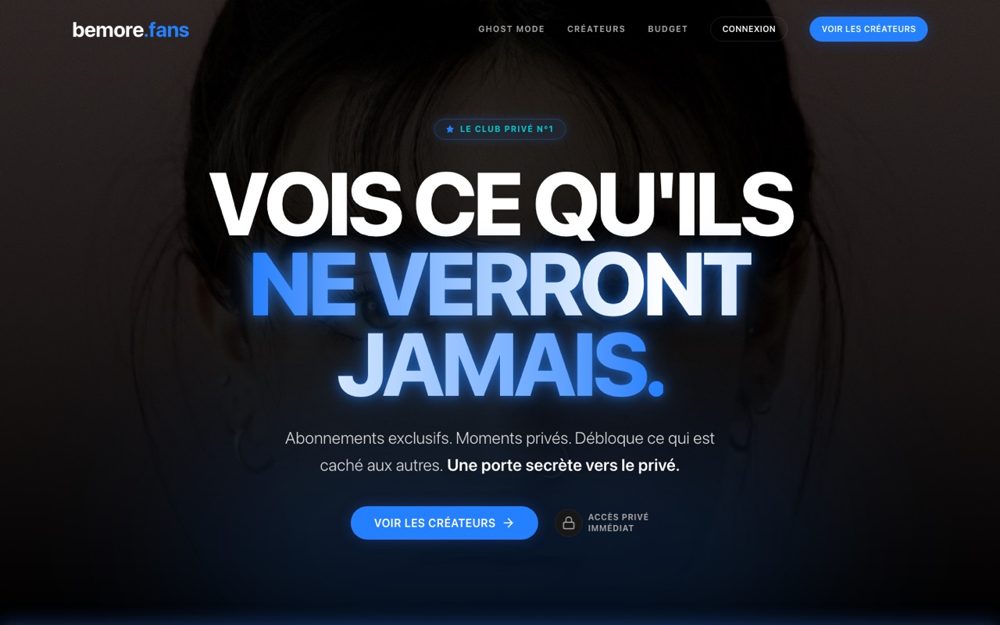

Case study · live product
bemore.fans
A creator subscription platform covering access to private content and the back-office tools that support it.
Project scope documented in

My contribution
On the web product, I worked on integrating recurring payments through Epoch, identity and age verification through Yoti, and access to private media through signed S3 URLs.
In the back office, I contributed to the internal tools for moderating messages and managing the affiliate programme. The application uses Next.js, TypeScript, Prisma and PostgreSQL.
Production timeline
The product was already publicly accessible on . The archived homepage shows sign-up and sign-in links. View the archived homepage.
On , the public site was accessible and still showed subscriptions and individually priced media.
Subscriptions and one-off purchases
We separated two ways to access content. A subscription opens a creator’s private feed. Individual media can be sold separately, so creators can offer paid content alongside their feed.
Both offers appear on the archived homepage and on the current site. The archived sales terms document one-off purchases, subscription renewals and the use of Epoch. The verification covered the public pages. Read the archived sales terms in French.